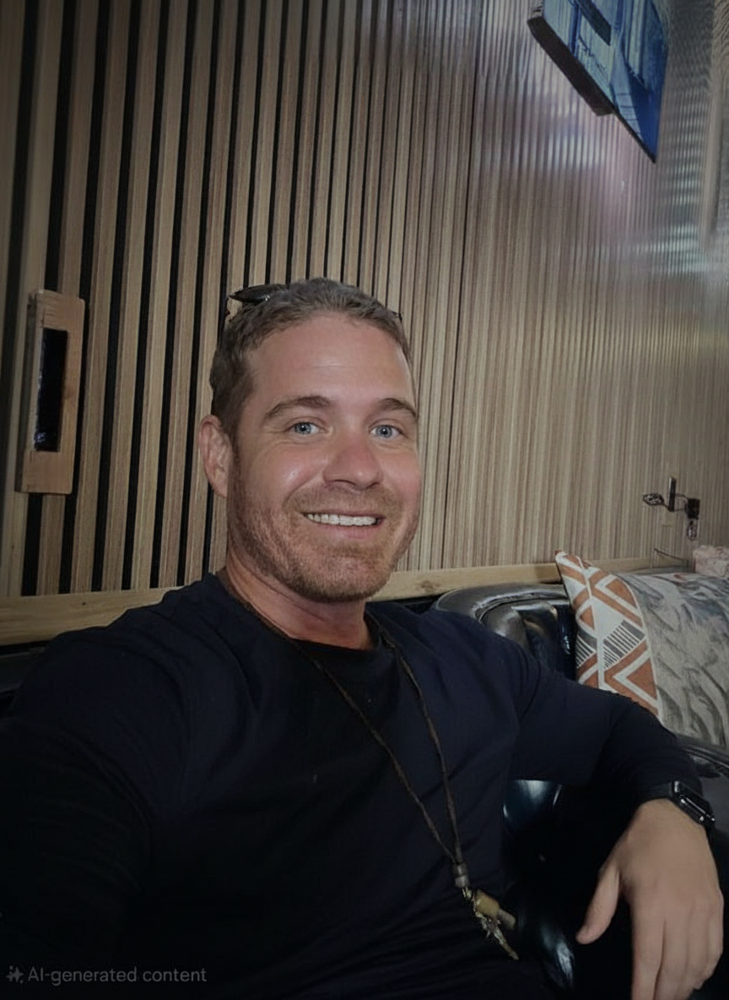

SafeHaven Digital Studio
Technology can protect, empower, and restore. Through SafeHaven Digital Studio, I apply my technical expertise to support organizations on the front lines of human trafficking prevention and survivor rehabilitation.
What We Do
- Digital Transformation for Impact: Helping anti-trafficking organizations modernize their online presence through secure, accessible website redesigns and digital resource hubs.
- AI and Data Solutions: Implementing privacy-centered AI tools and ethical data systems that enhance outreach, case management, and survivor support—without compromising safety or confidentiality.
- Collaborative Partnerships: Working alongside shelters, advocacy networks, and legal service providers across Virginia and beyond to strengthen digital infrastructure and streamline collaboration.
- Empowerment Through Technology: Developing digital literacy and training programs that enable survivors and at-risk communities to build sustainable tech-driven futures.
SafeHaven Digital Studio represents my belief that technology, when built and applied ethically, can be a powerful force for justice and renewal.

From Special Operations Intelligence to Cloud/AI and Survivor Advocacy
I am Shane Dennis, a full-stack developer and military veteran based in Charlottesville, Virginia. I build secure, observable systems and am fiercely dedicated to protecting vulnerable communities.
About Me

Building the Future, Grounded in Service
My journey didn't start in a tech hub—it began in the United States military. For over 15 years, I served in military intelligence alongside the 1st and 5th Special Forces Groups. That experience taught me resilience, the critical nature of accurate data, and what it truly means to lead and be accountable in high-pressure situations.
Transitioning into tech as a full-stack cloud and AI developer, I brought those lessons with me. Today, my mission is clear: to build robust, secure, and ethical technology that actually helps people. Whether that means engineering observable AI systems or developing tools to support survivors, I am focused entirely on positive, tangible impact.
- Integrity
- Service
- Accountability
- Continuous Learning
Impact & Technical Projects
AI Observability Dashboard
A comprehensive system designed to monitor and trace the behavior, latency, and cost of AI agents in production. Built to ensure ethical constraints are met and latency remains optimal.
Health & Fitness Analytics
Power BI dashboards integrating Fitbit API data locally to track complex health metrics. Translates unstructured raw JSON into actionable fitness and fasting insights.
Sweetberry Photography
A responsive, visually stunning portfolio application developed to highlight professional photography work. Features modern gallery aesthetics, light/dark modes, and secure admin controls.
Kids Educational Tools
Interactive learning dashboards structured specifically for children, focusing on secure access, gamified learning paths, and tracking developmental milestones.
How I Can Help
Services & Expertise
I combine my rigorous military intelligence background with deep technical expertise to solve critical problems for modern organizations.
- Cloud & AI Consulting: Designing scalable, secure Azure infrastructure and integrating observable LLM workflows.
- Data Insights & Dashboards: Transforming fragmented data sources into clean, compelling Power BI business intelligence.
- Nonprofit Process Automation: Streamlining operations and case management so advocates can focus on the people they serve.
- Speaking & Strategy: Engaging talks on ethical AI, data security, personal resilience, and transitioning from the military to tech.
Ideal Collaborators
I work best with organizations that value transparency, ethical design, and quantifiable impact. Whether you're a startup looking to secure your AI or a legal team needing deep data architecture for advocacy work, let's build something lasting.
Schedule an Intro CallThought Leadership & Insights
My Journey from Special Operations to Cloud & AI Engineering
The translation of military intelligence analysis into large-scale cloud architecture, and the crucial role of resilience.
Read Article →How I Build Ethical and Observable AI Systems
A practical look into how we can monitor, trace, and establish safeguards for AI pipelines in real-world environments.
Read Article →Using Technology to Support Human Trafficking Survivors
Why privacy-centric case management software is critical for advocacy, and my vision for our developing nonprofit initiatives.
Read Article →Character & Professional References
"Shane Dennis brings an intense, methodical approach to complex data problems. His history in intelligence allows him to see analytical patterns most engineers miss."
"I have seen firsthand his absolute dedication to protecting the vulnerable. He takes immense personal accountability and channels it directly into community service."
"Reliable, precise, and profoundly ethical in his technical implementations. The secure environments he built ensure our operations run flawlessly."
Addressing Concerns & Moving Forward
What is your core focus right now?
My entire focus is on my professional engineering work and building organizational frameworks to assist human trafficking survivors. I am fiercely dedicated to creating a positive, tangible impact moving forward, leveraging my technical skills for the greater good.
How has your past shaped your current ethos?
I take complete accountability for every chapter of my life. My military background instilled discipline, while navigating life's more difficult, transitional periods taught me the profound importance of humility, ethical rigor, and second chances. I am committed to continuous learning and maintaining absolute integrity in everything I build today.
Let's Build Together
Whether you need an expert cloud engineer, a consultant on ethical AI systems, or want to partner on survivor advocacy, my door is open.
- Location: Charlottesville, VA
- Email: shane_dennis@outlook.com